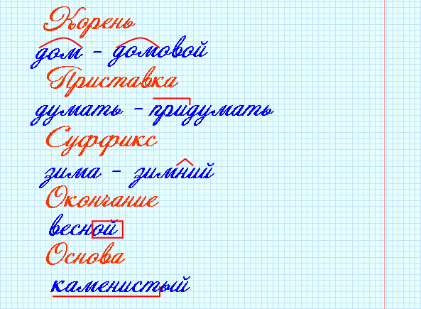
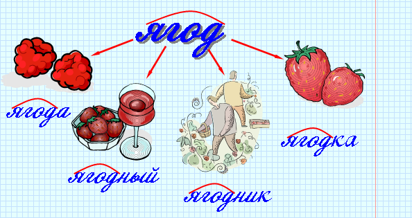
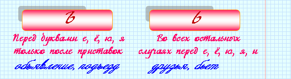

|
Морфемика – это раздел науки о языке, в котором изучается состав (строение) слова. Слова состоят из значимых (имеющих значение) частей, или морфем: приставок, корней, суффиксов и окончаний. |

|
Слова с одинаковыми корнями называются однокоренными. |
 |
Чтобы найти в слове его корень, надо подобрать родственные слова. Та часть, которая повторяется во всех них и будет корнем. Например: звезда – звездный – созвездие … |

|
Приставки и суффиксы – это значимые части слова, которые служат главным образом для образования новых слов. |
|
В основе слова, кроме корня, может быть: 1. одна приставка: вход; 2. один суффикс: дружок; 3. приставка и суффикс: загородный; 4. несколько приставок и суффиксов: окружность (приставка о-, суффиксы -н- и -ость-). |
